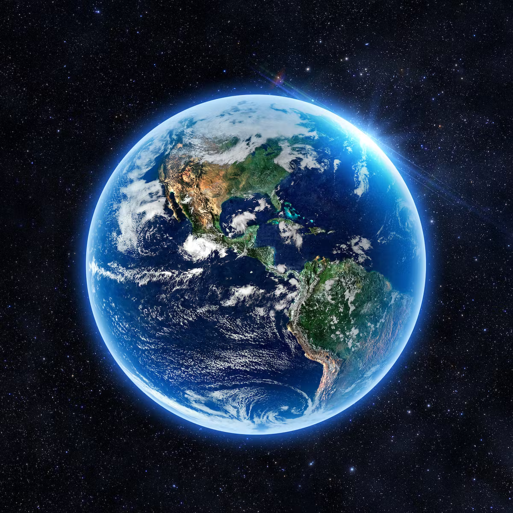
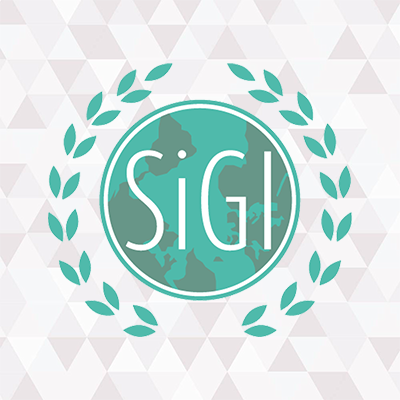

Encontro Anual do Fórum Econômico Mundial
Preparem suas agendas para o encontro que vai acontecer em janeiro em Davos.

O que é a SIGI?
A Simulação Geopolítica do Ifes(SiGI) é um projeto de extensão institucionalizado desenvolvido pelo Instituto Federal de Ciência e Tecnologia do Espírito Santo e organizado pelos campi Vitória, Serra e Cachoeiro. O projeto consiste em simular um ambiente de diplomacia internacional nos moldes das Nações Unidas, cujo principal objetivo é levar aos participantes do evento - que se dirige aos alunos do 9º ano do Ensino Fundamental ao Ensino Médio - o conhecimento sobre temas e problemáticas procedentes da conjuntura geopolítica nacional e internacional, de modo a incentivá-los a desenvolver pedagogicamente o processo de discussão e resolução dessas problemáticas. Saiba mais.
